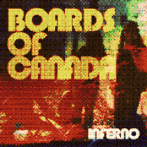
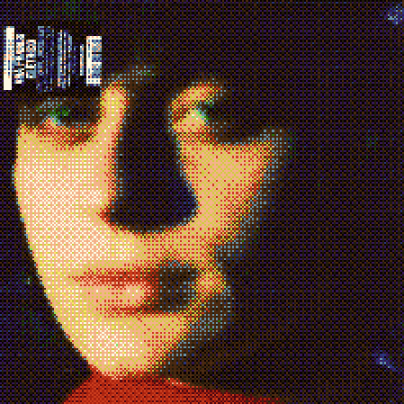
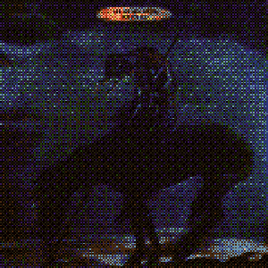
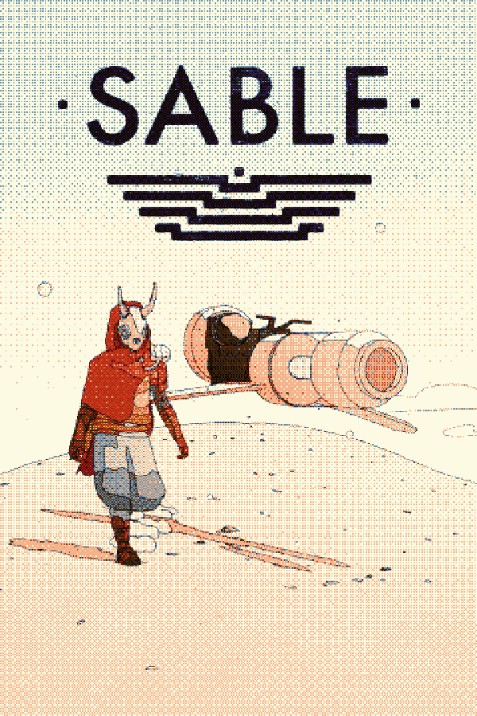
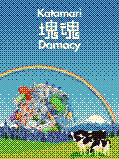
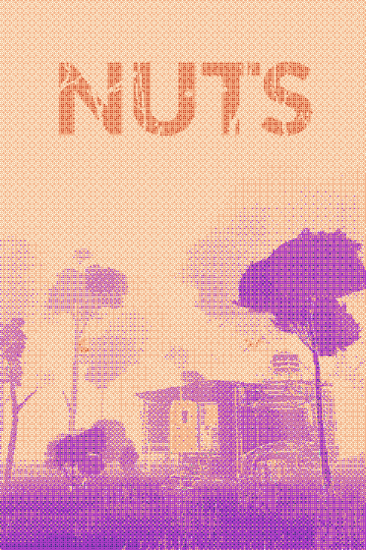
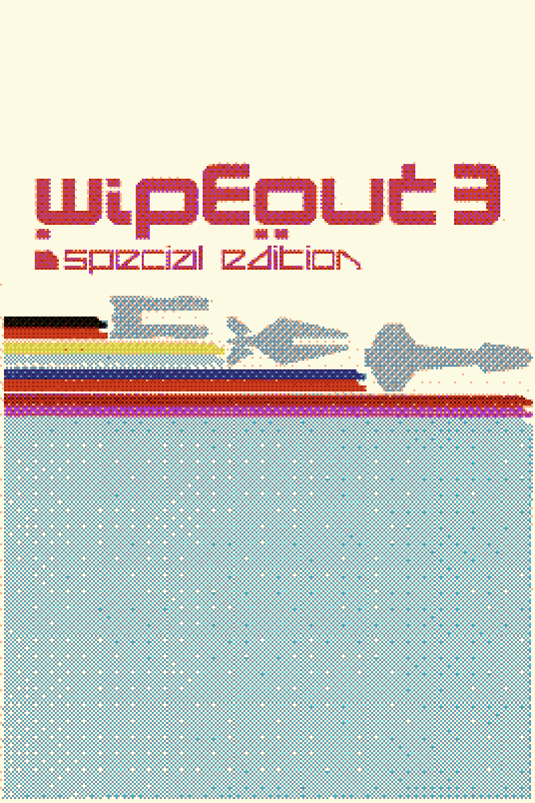

To Read
To Listen
|
 Inferno - Boards of Canada |

Sakura - Susumu Yokota |
 Little Electric Chicken Heart - Ana Frango Eletrico |
 Surfs Up - The Beach Boys |
|
To Play
|
 Sable |
 Katamari Damacy |
 Nuts |
 Wipeout 3 |
|